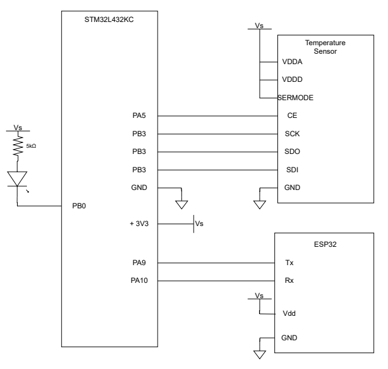
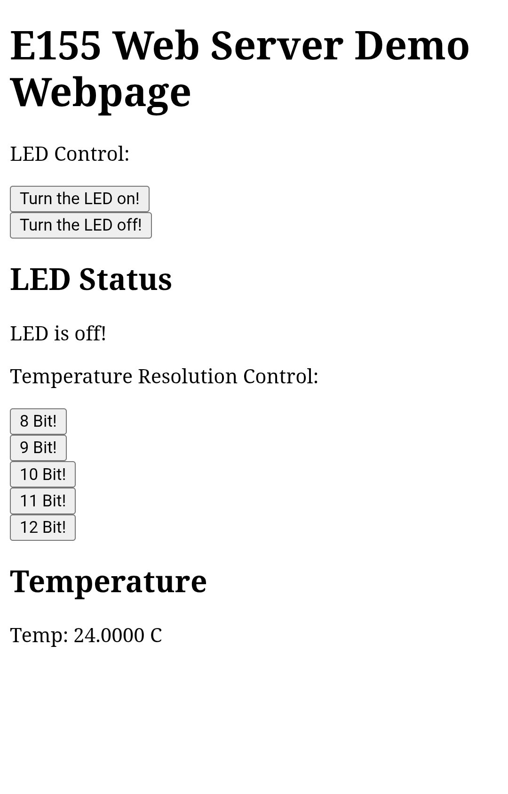
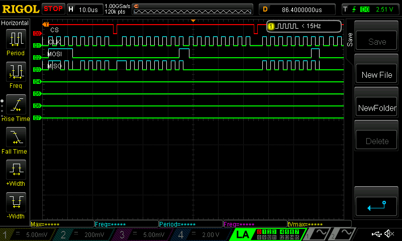
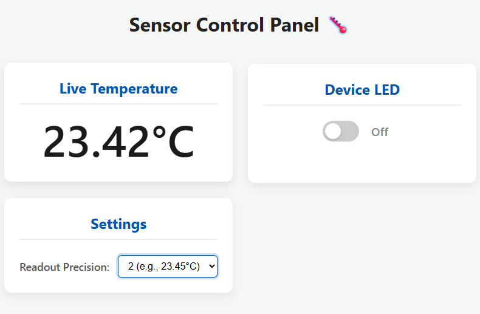

Lab 6: The Internet of Things and Serial Peripheral Interface
Introduction
The goal of this lab is to to build a functional, internet-accessible Internet of Things (IoT) device. The main objective is to create a system where a user can remotely control an onboard LED and view ambient temperature via a custom webpage. To accomplish this, a C library was written using CMSIS device templates to implement the MCU’s Serial Peripheral Interface (SPI), which will be used to interface with a DS1722 temperature sensor. Concurrently, the MCU must communicate with an ESP8266 Wi-Fi module over a UART link to host and serve a dynamically generated HTML webpage. Finally, a logic analyzer was used to capture and analyze the SPI communication signals for debugging and documentation.
Technical Documentation:
The source code can be found on my GitHub
The datasheet for the temperature sensor (DS1722) can be found here.
Schematic

Website

Above the website is shown. It allows the user to toggle the LED and change the resolution of the temperature sensor.
Logic Analyzer for SPI traces

Results and Discussion
The design implemented meets all the design constraints requested. The STM is able to communicate via UART with the ESP to host the webserver. The webpage correctly toggles the LED and shows the correct status of the LED. The STM also correctly communicates with the DS1722 temperature sensor via SPI. The design correctly toggles and displays the different temperature resolutions.
I spent 12 hours on this lab.
AI Prototype Reflection
The design met all design objectives requested.
The image of the working set up can be found below.
LLM prompt 1 fed to Gemini:
I’m making a web portal to interface with a temperature sensor. Create a HTML page that looks good and is intuitive to show the temperature, control an LED, and change the precision of the readout.
The HTML produced a very nice asthetic since it used some CSS to define a slider and card widget. The output can be seen below. The HTML generated is currently not functional since its using static values but it would be easy to update and integrate this html with our project.

LLM prompt 2 fed to Gemini:
Write me a C function to carry out a SPI transaction to retrieve a temperature reading from a DS1722 sensor. Make use of CMSIS libraries for the STM32L432KC.
It got mostly there since the process is outlined pretty well online, but it forgot to write an initialization function for the SPI. The SPI temp read funciton also used the SPI busy bits in the control register but the LLM already added a waiting feature by checking flags in the spi_send_recieve function so it was a little redundant. But overall a good first pass.
The output of both prompts from the LLM can be found on GitHub